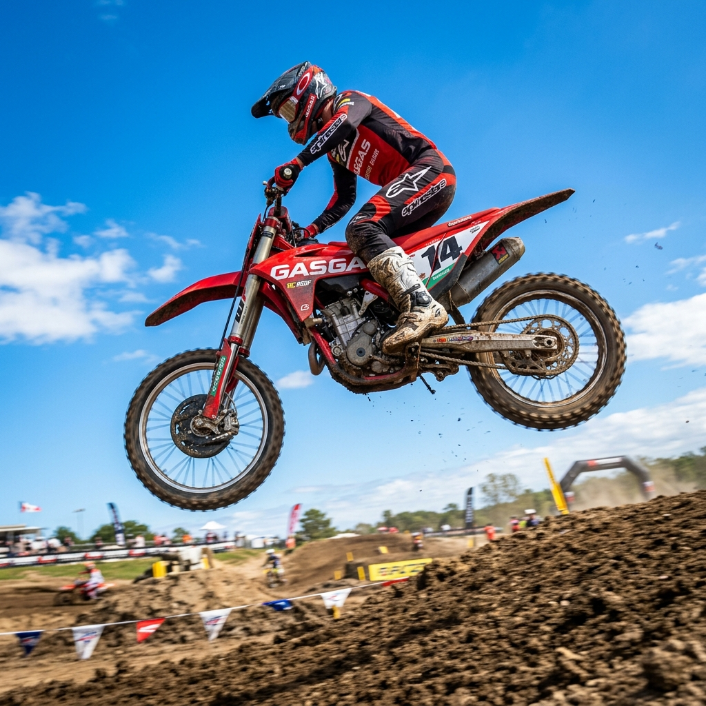

Od prvních trialových motocyklů až po světovou dominanci.

Všechno to začalo na přelomu sedmdesátých a osmdesátých let v Katalánsku, které bylo a stále je považováno za srdce světového trialu. Španělský motocyklový průmysl tehdy procházel hlubokou krizí a slavné domácí značky jako Bultaco, Ossa nebo Montesa buď definitivně krachovaly, nebo radikálně omezovaly svou výrobu.
V této nejisté době provozovali dva katalánští obchodníci a nadšenci do terénních motorek, Narcís Casas a Josep Pibernat, v městečku Salt úspěšné dealerství právě pro zanikající Bultaco. Protože najednou neměli co prodávat a poptávka po trialových strojích byla stále obrovská, rozhodli se vzít situaci do vlastních rukou a postavit si motorky sami. Název nové značky vznikl naprosto spontánně z tamního motorkářského slangu. Výraz GasGas v překladu doslova znamená „přidej plyn“ nebo „plyn, plyn!“. Zakladatelé zkrátka chtěli úderné jméno, které by vyjadřovalo rychlost, dynamiku a čisté nadšení pro jízdu, i když v budoucnu museli na americkém trhu občas vtipně vysvětlovat, že to nemá nic společného s plynovým palivem.
První prototypy spatřily světlo světa v roce 1984. Casas a Pibernat tehdy zkombinovali upravené rámy od italské značky SWM s osvědčenými motory Cagiva o objemu 325 ccm. O rok později, v roce 1985, pak na motocyklové výstavě v Barceloně oficiálně představili svůj první sériový trialový model pojmenovaný GasGas Halley 325. Jako testovací jezdec jim tehdy pomáhal slavný trialista Juan Ruiz. Motorky měly okamžitě obrovský úspěch, protože byly lehké, agilní a konstruovali je lidé, kteří trialu dokonale rozuměli.
Cesta na absolutní vrchol byla pak už velmi rychlá. V roce 1989 začala firma vyrábět své vlastní motory, čímž se stala zcela nezávislým výrobcem. Netrvalo to ani deset let od představení prvního modelu a v roce 1993 vybojoval legendární Jordi Tarrés pro GasGas historicky první titul mistra světa. Tím se tato původně malá španělská dílna definitivně zařadila mezi motocyklovou elitu a odstartovala éru, která přes pozdější finanční potíže a spojení s rakouským koncernem KTM trvá úspěšně až dodnes.